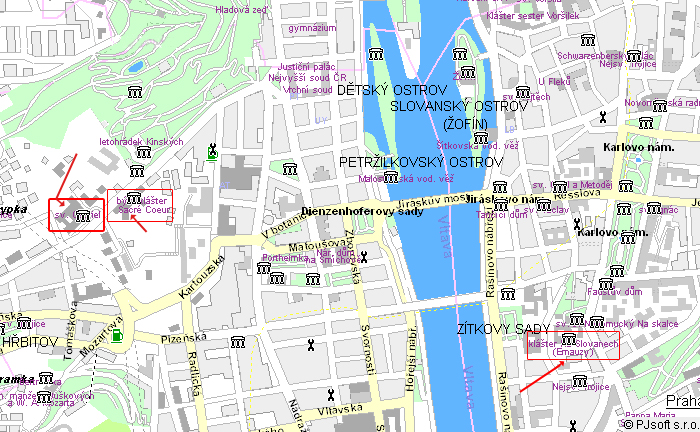

';
menu ('Beuronské umìní','beuronske-umeni.html');
menu ('Páter Lenz','pater-lenz.html');
menu ('Kánon','kanon.html');
$menu .= '
';
menu ('Autoøi','autori.html');
menu ('Zdroje','zdroje.html');
zahlavi ();
?>
Opatství sv. Gabriela
a dal¹í památky s beuronským umìním
